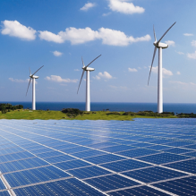

Electrical Energy
 Electric energy is the energy that results from the movement of charged
particles, such as electrons, through a conductor. This type of energy is
often associated with electricity, and it is used to power many devices and
systems, from small household appliances to large industrial machinery.
Electric energy can be generated through a variety of methods, including
burning fossil fuels, harnessing the power of wind or water, or using
nuclear reactions. It can also be stored in batteries or capacitors for
later use. When electric energy is converted into another form of energy,
such as light or heat, it is often referred to as electric power.
Electric energy is the energy that results from the movement of charged
particles, such as electrons, through a conductor. This type of energy is
often associated with electricity, and it is used to power many devices and
systems, from small household appliances to large industrial machinery.
Electric energy can be generated through a variety of methods, including
burning fossil fuels, harnessing the power of wind or water, or using
nuclear reactions. It can also be stored in batteries or capacitors for
later use. When electric energy is converted into another form of energy,
such as light or heat, it is often referred to as electric power.
WATTS
A watt is a unit of power in the International System of Units (SI). It is defined as the amount of energy transferred per second or the speed at which work is done. More specifically, one watt equals one joule of energy per second. This unit is commonly used to express the performance of electrical devices such as light bulbs, motors, and electronics. For example, a 100-watt light bulb uses 100 joules of energy every second it is turned on. The Watt is named after James Watt, an 18th-century Scottish inventor and engineer who helped develop the steam engine.
Scatter Plot
 A scatterplot is a type of
graph that shows the relationship between two variables. It consists of a
series of points, each representing a unique combination of values for the
two variables being analyzed. One variable is plotted on the horizontal axis
while the other variable is plotted on the vertical axis. Each point on the
scatter plot represents a single observation, and the position of the point
indicates the values for both variables. Scatterplots are commonly used in
statistical analysis to identify patterns, trends, and correlations between
variables. By visually examining the distribution of points on the
scatterplot, it is possible to determine the strength and direction of the
relationship between the analyzed variables.
A scatterplot is a type of
graph that shows the relationship between two variables. It consists of a
series of points, each representing a unique combination of values for the
two variables being analyzed. One variable is plotted on the horizontal axis
while the other variable is plotted on the vertical axis. Each point on the
scatter plot represents a single observation, and the position of the point
indicates the values for both variables. Scatterplots are commonly used in
statistical analysis to identify patterns, trends, and correlations between
variables. By visually examining the distribution of points on the
scatterplot, it is possible to determine the strength and direction of the
relationship between the analyzed variables.
Linear Regression
A scatterplot, also known as a scatterplot, is a type of chart that represents data points as a collection of points in a two-dimensional coordinate system. Each point on the chart represents the values of two variables for a single data point. The horizontal axis of the chart represents one variable while the vertical axis represents the other variable. Scatterplots are often used to identify relationships between variables, e.g. B. Correlation or causation. By examining the pattern of points on the chart, you can see if there is a trend or a pattern in the data. For example, if the points on the graph appear to be grouped around a straight line, this indicates a strong linear relationship between the variables. Alternatively, if the points appear randomly scattered, this indicates little to no relationship between the variables. Scatterplots are commonly used in fields such as statistics, data analysis, and scientific research to visualize and interpret complex data sets. They are a useful tool for identifying trends and patterns in data and making predictions based on monitored relationships between variables.
Renewable Energy
 Renewable energy refers to energy that comes from natural resources that are replenished over time, such as sunlight, wind, rain, geothermal energy, and biomass. Unlike non-renewable energy sources such as fossil fuels, renewable energy sources are sustainable and do not produce harmful emissions or contribute to climate change. Renewable energy is becoming an increasingly important part of the global energy mix as countries look for ways to reduce their dependence on fossil fuels and meet their energy needs in more sustainable ways. Common examples of renewable energy technologies are photovoltaic panels, wind turbines, hydroelectric power plants and geothermal energy systems. Renewable energy has many benefits, including reducing greenhouse gas emissions, improving air quality and creating new economic opportunities. However, there are also challenges in scaling renewable energy systems, such as the need for large upfront investments, disruption issues, and the need for adequate energy storage solutions. Despite these challenges, many experts believe that renewable energy has the potential to play an important role in meeting the world's future energy needs.